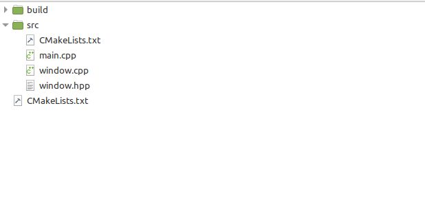
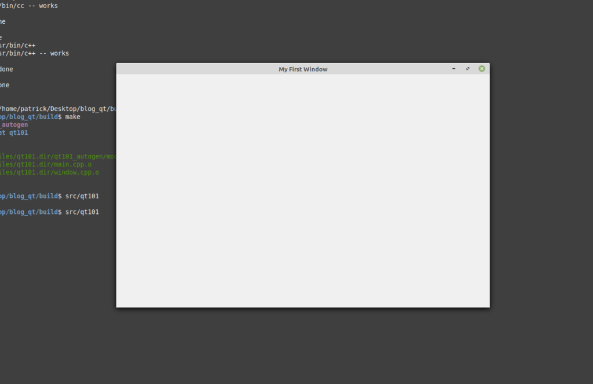
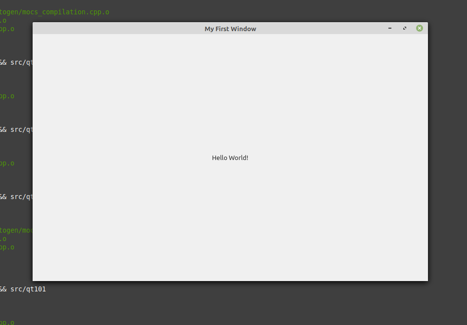
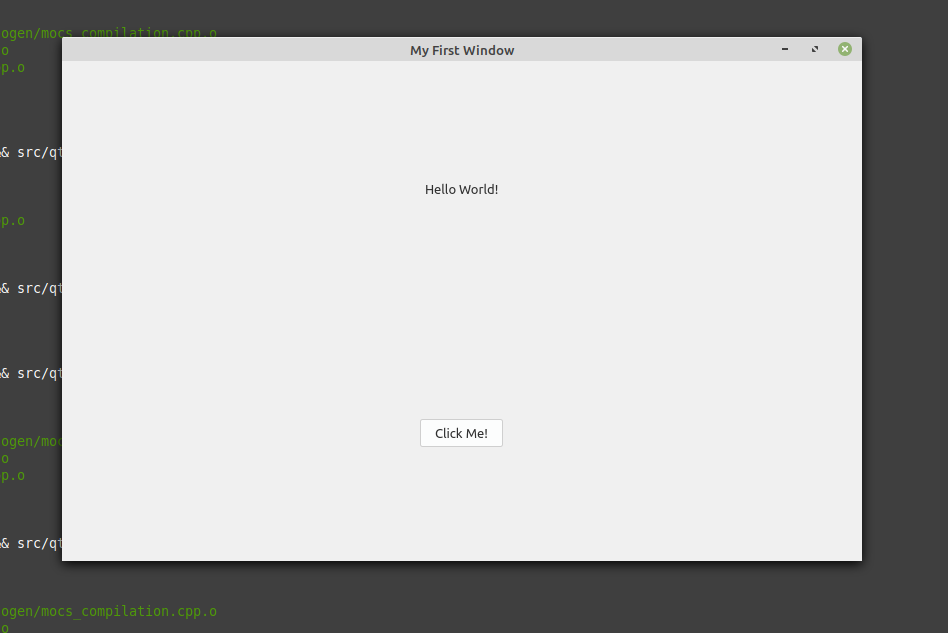
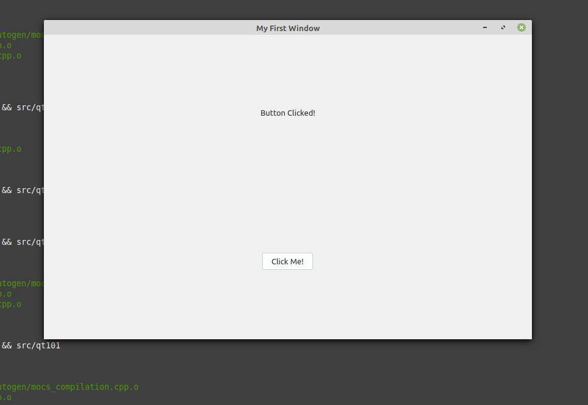

Qt 101: Creating a Simple GUI Application
Hello everyone! Today, we're going to take a break from compilers and programming languages, and dive into something different: GUI programming.
Throughout the time I've been in computer science, I've largely (but not completely) stayed in two areas: compiler and language tools, and desktop GUI applications. Although I've done more compiler projects at this point, my GUI projects have ended up being the most useful. I've made several, and a few I've used for everyday purposes for quite a while now. The best example is CppEditor, my text and code editor. I find being able to write and use a GUI application that you made completely yourself very satisfying.
There are several different GUI frameworks in existence for different languages and platforms. While I've by no means used all of them, I have tried several. Mostly notably, I've used Gtk+ and it's derivatives (Gtkmm, PyGtk, and Gtk
on Linux, and WinForms on Windows. However, I keep comping back to one framework: Qt.
Qt is one of the few software frameworks I cannot speak highly enough of. While it's primarily useful for it's GUI components, it includes a wide range of components that can be used for many different tasks- everything from console IO to reading and writing files and containers, to name a few. However, Qt is most important in that it is completely cross platform- code you write in Qt can be recompiled on other systems with little to no modifications.
Qt is a C++ framework, which makes it really easy to get started with. Although there are many elements of C++ I dislike, I feel that Qt is one of the better frameworks at harnessing its power. The documentation is excellent and very well suited to beginners.
However, I'm going to stop talking now, and in this post, we're going to create a simple example application that will introduce you to Qt. Let's dive in.
Prerequisites
As I mentioned in the introduction, Qt is completely cross-platform. If you're on Linux as I am, the Qt5 development packages can be found in the repositories:
- On Debian/Ubuntu/Linux Mint: "qt5-default qtbase5-dev"
- On Fedora/Red Hat/CentOS: "qt5-qtbase qt5-qtbase-devel"
- On Manjaro/Arch Linux: "qt5-base"
On MacOS, you can install Qt5 through Brew. Alternatively, for all systems (Windows, Linux, and MacOS), you can download the free open source version from the Qt5 website. It is a complete installer, including the rather nice Qt Creator IDE.
In this tutorial, we're not going to use Qt Creator. Rather, I'm going to use CMake as the build system and write the code using a text editor. Sure, you can debate with me whether that's the best idea, but I think it is a really good way to get to know the framework in depth. If you absolutely don't want to use CMake, and would rather use Qt Creator instead, that's still fine. The C++ code will still be the same.
Setting Up the Build System
The first step is to set up CMake. Although there are many ways to set up a project, I generally set up my projects something like this:

As you can see, there are two "CMakeLists.txt" files. The one in the root directory holds the configuration parameters for the entire project. The one in the "src" directory holds the parameters for the main executable- the source. In larger projects, you may have separate libraries or even separate executables, in which case you will have separate folders, each with its own "CMakeLists.txt".
Let's start with the root level "CMakeLists.txt". The file should look something like this:
cmake_minimum_required(VERSION 3.0.0)
project(Qt101)
set(CMAKE_AUTOMOC ON)
set(CMAKE_AUTORCC ON)
set(CMAKE_AUTOUIC ON)
find_package(Qt5 REQUIRED COMPONENTS
Core
Widgets
Gui
)
add_compile_options(-std=c++14)
add_subdirectory(src)
Much of this should be self-explanatory. CMake requires the first line. I don't think the second line is strictly required, but it is good to have, especially if you use an IDE. The next three lines tell the build system to run Qt-specific preprocessors. The first one ("CMAKE_AUTOMOC") is always required, but the second two are not always. Nevertheless, they are good to have, and it won't hurt anything to include them.
Finally, we tell CMake to search the system for Qt5, add compile options, and point it to the source directory.
Okay, now lets look at the source-level CMakeLists.txt:
cmake_minimum_required(VERSION 3.0.0)
project(Qt101)
set(SRC
main.cpp
window.cpp
)
add_executable(qt101 ${SRC})
target_link_libraries(qt101
Qt5::Core
Qt5::Widgets
Qt5::Gui
)
This should also be mostly self-explanatory. We tell CMake what the source files are, use them to create an executable file, and link that executable to the Qt5 libraries.
In case of any confusion, consider this line:
set(SRC
main.cpp
window.cpp
)
This creates a CMake variable called "SRC". Even though I named it the same as the folder, you don't have to do that. You can name it whatever you want. Also, CMake does not require header files to be listed (after all, headers are included, not compiled on their own...). Just include the C++ sources, and you're good to go.
Creating the Window
Okay, now that all our CMake work is done, we can dive into C++. To create our window, we will need three files: "main.cpp", "window.cpp", and "window.hpp".
Let's start with "main.cpp":
#include <QApplication>
#include "window.hpp"
int main(int argc, char *argv[]) {
// Before you can create an Qt objects, you have to create
// a QApplication object
//
QApplication app(argc, argv);
Window win;
win.show();
return app.exec();
}
This file is fairly straightforward. In the main function, we create two objects: "app", which is a QApplication, and "win", which is the main window. All Qt GUI programs require a QApplication object to be created before any GUI objects. A QApplication handles Qt specific stuff and prepares the environment. After the GUI object is created, we call "exec()" on the app, which runs the program.
Now let's look at "window.hpp":
#pragma once
#include <QMainWindow>
// The class defining our main window
//
// We could use QWidget, but QMainWindow provides a lot
// more nice functions which make things easier, so unless you have
// a good reason it is better to use QMainWindow
//
class Window : public QMainWindow {
Q_OBJECT
public:
Window();
~Window();
};
The comments explain what this does. In short, we create a class derived from the QMainWindow object. This will create the main window of the application. QMainWindow in turn inherits from QWidget. QWidget on it's own can be used to create a window, but it is better to use QMainWindow because it has many nice features which makes setting things up easier.
Now that we have defined the window, let's look at "window.cpp":
#include "window.hpp"
// The constructor, where we setup our main window
Window::Window() {
this->setWindowTitle("My First Window");
this->resize(800, 500);
}
// The destructor, where we clean up any internal components
Window::~Window() {
}
In this file, we do the actual setting up of the window. Currently, we aren't doing a whole lot. We are just setting the window title and setting the initial size.
As a quick note, you will notice that I use "this->" in my code. I do this as well in my actual GUI projects. Technically, you don't have to do this since the function is a class member function by virtue of it inheriting from another function. However, I do this to differentiate between functions specific to my class, and functions which are part of a super class. There is no right or wrong way to do this, but I believe having this verbosity makes reading and understanding programs easier.
Building and Running
We're making progress. We have our build system setup and our initial source files created. We are now ready to build and run. Open a terminal in your root directory, and execute the following commands (Windows users, you will have to figure out the equivalents. MacOS users, you can use these commands):
mkdir build
cd build
cmake ..
make
src/qt101
If all goes well, you should see a window like this:

True, this may seem kind of boring, but this is the first step! Even with more complicated projects, this is the initial first step. Now that we have a window created, we can populate it and turn it into a real appliction.
Let's get started.
Adding a Label
First, we're going to add a button. You may be wondering like "Why is that interesting?", but the answer is that it doing so involves a little more than just adding a label. In order to add multiple widgets, you have to create a central widget within the window with a layout manager. This is what we'll be doing.
So first, change "window.hpp" to look like this:
#pragma once
#include <QMainWindow>
#include <QFrame>
#include <QVBoxLayout>
#include <QLabel>
// The class defining our main window
//
// We could use QWidget, but QMainWindow provides a lot
// more nice functions which make things easier, so unless you have
// a good reason it is better to use QMainWindow
//
class Window : public QMainWindow {
Q_OBJECT
public:
Window();
~Window();
private:
QFrame *mainContent;
QVBoxLayout *mainLayout;
QLabel *label;
};
As you can see, under the "private" declaration, we have added three new objects. The "mainContent" object will be the actual widget taking up space. The "mainLayout" is the layout manager. Because it is a QVBoxLayout object, widgets will be laid out in a vertical manner. Finally, we have "label", which will hold the actual text.
As you can probably guess, this will require changes to "window.cpp":
#include "window.hpp"
// The constructor, where we setup our main window
Window::Window() {
this->setWindowTitle("My First Window");
this->resize(800, 500);
// Create the main widget with the layout
mainLayout = new QVBoxLayout;
mainContent = new QFrame;
mainContent->setLayout(mainLayout);
this->setCentralWidget(mainContent);
// Now, create the label
label = new QLabel("Hello World!");
mainLayout->addWidget(label, 0, Qt::AlignCenter);
}
// The destructor, where we clean up any internal components
Window::~Window() {
}
Once again, this is all fairly straightforward. We first create the central widget, create and add our vertical layout, and finally add it all to the window. The "setCentralWidget" call is one of the convenience functions of QMainWindow; it does the hard part of creating the main content area. Finally, we create the our label, and add it to the center of the layout.
Run "make" again, and if all goes well, you should see something like this:

Adding a Button
Okay, now let's add a button and make something happen when we click it. Once again, we need to change the header file:
#pragma once
#include <QMainWindow>
#include <QFrame>
#include <QVBoxLayout>
#include <QLabel>
#include <QPushButton>
// The class defining our main window
//
// We could use QWidget, but QMainWindow provides a lot
// more nice functions which make things easier, so unless you have
// a good reason it is better to use QMainWindow
//
class Window : public QMainWindow {
Q_OBJECT
public:
Window();
~Window();
private:
QFrame *mainContent;
QVBoxLayout *mainLayout;
QLabel *label;
QPushButton *button;
private slots:
void onButtonClicked();
};
You'll first notice the QPushButton object, which probably isn't surprising. But consider the next two lines. Qt uses a concept called "signals and slots", which are used for sending and receiving GUI events such as a button press. Most of the time, a Qt end-user programmer won't use signals- out of all my applications, I think I've used them only once, maybe twice. But you will very heavily use slots. Slots receive events. Slots are received in class level functions, which you define under the label "private slots".
Depending on your knowledge of C++, you may wonder how that works since "slots" is not a C++ keyword. Remember when we were setting up CMake, how we added that "CMAKE_AUTOMOC ON" line? MOC is a Qt-specific tool that converts things like these keywords into something a conventional C++ compiler can understand. In other words, MOC is basically a preprocessor.
Okay, now let's head over to the source file:
#include "window.hpp"
// The constructor, where we setup our main window
Window::Window() {
this->setWindowTitle("My First Window");
this->resize(800, 500);
// Create the main widget with the layout
mainLayout = new QVBoxLayout;
mainContent = new QFrame;
mainContent->setLayout(mainLayout);
this->setCentralWidget(mainContent);
// Now, create the label
label = new QLabel("Hello World!");
mainLayout->addWidget(label, 0, Qt::AlignCenter);
// Finally, create the button
button = new QPushButton("Click Me!");
mainLayout->addWidget(button, 0, Qt::AlignCenter);
connect(button, &QPushButton::clicked, this, &Window::onButtonClicked);
}
// The destructor, where we clean up any internal components
Window::~Window() {
}
// Called when the button is clicked
void Window::onButtonClicked() {
label->setText("Button Clicked!");
}
It's not too different, but there are some items of interest. Creating a button looks similar to the rest of the objects, but notice that "connect" line. "Connect" is in charge of assigning the slot we created to the button's "clicked" signal. The syntax is basically this: "connect(<variable>, <variable signal>, <object-with-slot>, <the-slot-name>)". Finally, at the bottom of the file is the slot itself. The slot is not very exciting; all it does is rename our label.
Once again, run "make". If all goes well, you should see this when you initially run the program:

And if your button works correctly, you will see the label text change:

Conclusion
Even though this post was long, we just barely scratched the surface of Qt. GUI's are a highly sophisticated part of your system, but one where you can do so many exciting things. Despite just scratching the surface, however, we have covered the most fundamental concepts. If you dive into the documentation, you can quickly learn how Qt works and start building your own more sophisticated programs.
In the future, I would like to go into more depth with Qt, so stay tuned for future posts. In the meantime, below are the sources for this example. They are in the public domain, so do as you wish with them:
qt101